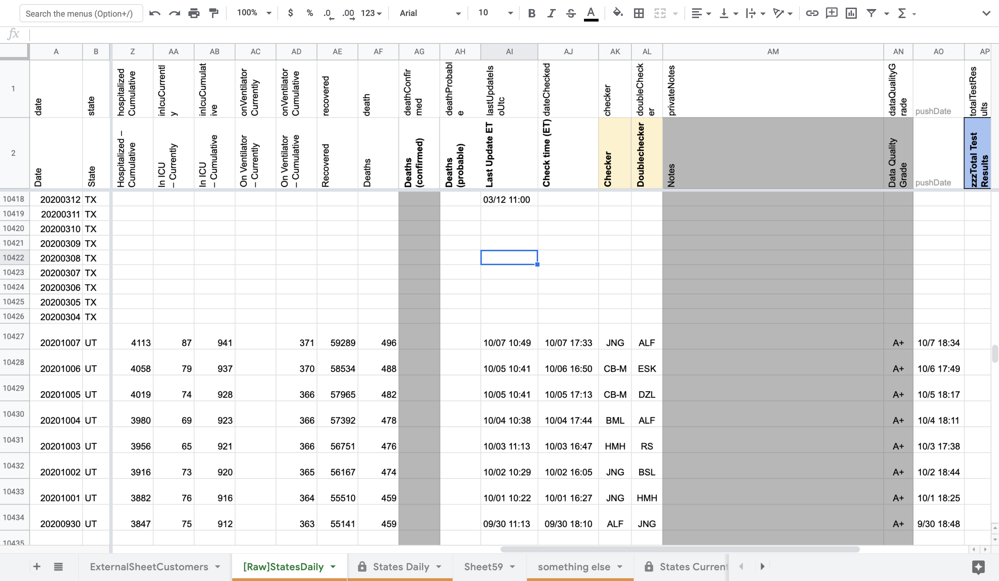
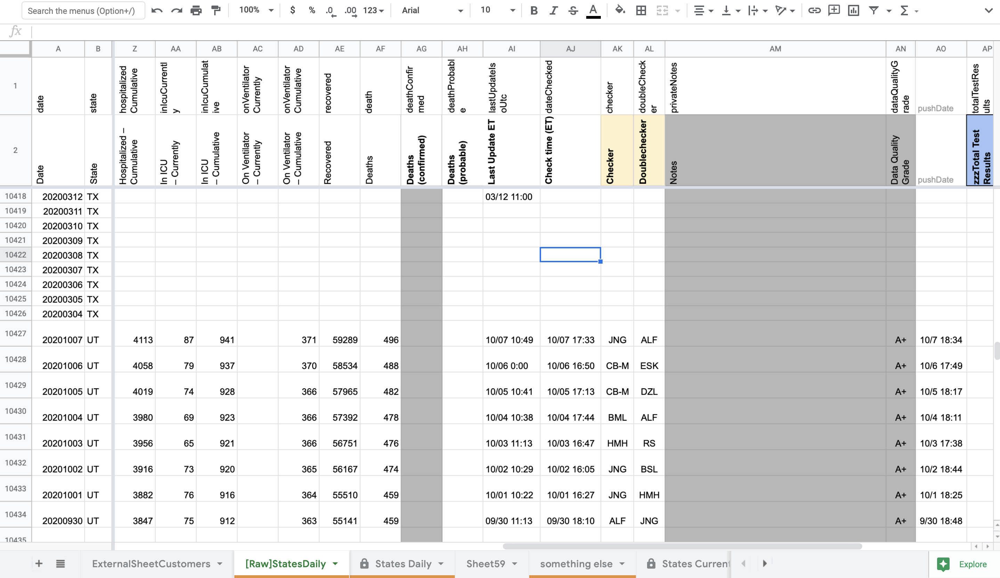
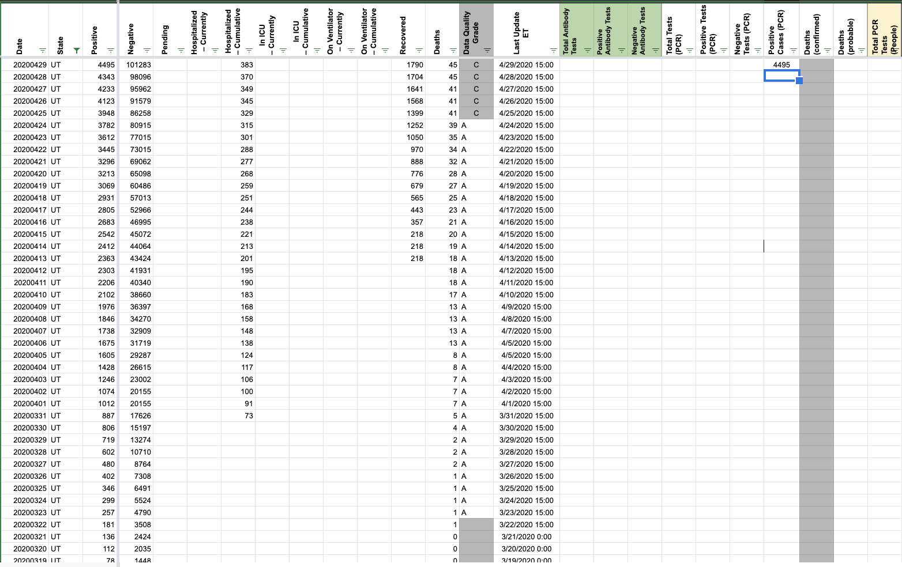
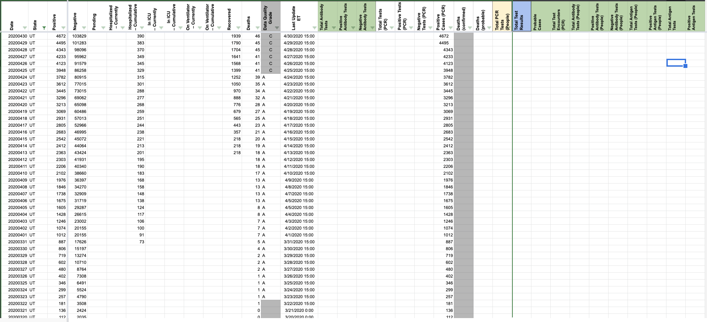
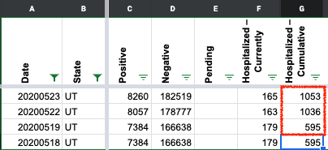
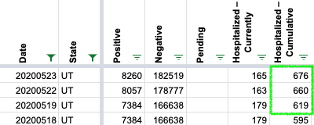
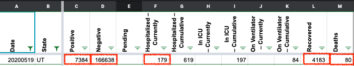
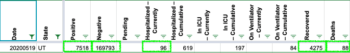

| Date | Number | Title |
|---|---|---|
| February 12, 2021, 8:01 PM PST | 1100 | [UT] clear confirmed cases |
| February 12, 2021, 8:01 PM PST | 1100 | [UT] clear confirmed cases |
| October 8, 2020, 6:29 AM PDT | 889 | [UT] Timestamp not entered on 10/6 |
| September 17, 2020, 9:14 AM PDT | 842 | [UT]Back-fill PCR test numbers from the dashboard |
| September 17, 2020, 7:23 AM PDT | 841 | [UT]Back-fill antigen test numbers from the dashboard for 6/10- |
| July 28, 2020, 7:39 AM PDT | 686 | [UT] PCL Historicals |
| June 25, 2020, 7:03 AM PDT | 526 | [UT] PCL Historicals and WS2 |
| May 28, 2020, 7:26 AM PDT | 461 | UT Current Hosp. data incorrect for 5/22 and 5/23 |
| May 24, 2020, 10:42 AM PDT | 450 | [UT Historical] Repair data for May 19, 22, 23 |
| March 20, 2020, 8:37 AM PDT | 25 | UT Data Issue |
#1100: [UT] clear confirmed cases
Issue number 1100
karaschechtman opened this issue on February 12, 2021, 8:01 PM PST
Labels Data quality
State or US: UT
Describe the problem We are currently using Utah's positive individuals tested via PCR as Confirmed cases. However, Utah does not present this figure as confirmed cases and instead calls its main case number, which includes both PCR and antigen tests, "lab-confirmed cases."
We decided to clear Confirmed cases field of the positive individuals tested via PCR number for two reasons:
- it goes against UT's own labeling of its confirmed cases so it is confusing.
- we are not sure this testing count is as comprehensive as a cases number: For example it could be only ELR.
However, we are not going to duplicate UT's main case number into confirmed cases to replace this number because the definition they use for "confirmed" is not in accordance with CSTE definitions. This follows our recent precedent in other states making similar decisions like IN.
Link to data source https://coronavirus-dashboard.utah.gov/
Comments
#1100: [UT] clear confirmed cases
Issue number 1100
karaschechtman opened this issue on February 12, 2021, 8:01 PM PST
Labels Data quality
State or US: UT
Describe the problem We are currently using Utah's positive individuals tested via PCR as Confirmed cases. However, Utah does not present this figure as confirmed cases and instead calls its main case number, which includes both PCR and antigen tests, "lab-confirmed cases."
We decided to clear Confirmed cases field of the positive individuals tested via PCR number for two reasons:
- it goes against UT's own labeling of its confirmed cases so it is confusing.
- we are not sure this testing count is as comprehensive as a cases number: For example it could be only ELR.
However, we are not going to duplicate UT's main case number into confirmed cases to replace this number because the definition they use for "confirmed" is not in accordance with CSTE definitions. This follows our recent precedent in other states making similar decisions like IN.
Link to data source https://coronavirus-dashboard.utah.gov/
Comments
#889: [UT] Timestamp not entered on 10/6
Issue number 889
hmhoffman opened this issue on October 8, 2020, 6:29 AM PDT
Labels Data quality
State: UT
Dates affected: 10/6
Describe the issue: On 10/6 the timestamp was not updated with the rest of the data. We should patch it from screen caps.
Links: https://covid-tracking.slack.com/archives/C01B0EGJ3J9/p1602101685233000
Comments
BEFORE: 
AFTER: 
Unfortunately our screenshot does not capture the exact update time we normally use, but it does capture the update date, so I have updated the date to 10/6 00:00.
#842: [UT]Back-fill PCR test numbers from the dashboard
Issue number 842
muamichali opened this issue on September 17, 2020, 9:14 AM PDT
Labels Data quality not stale
State or US: Utah
Describe the problem Utah provides a time series of positive and negative PCR tests & people on their dashboard that can be manually captured and summed to get cumulative values.
The current number of total tests on the dashboard lumps PCR and antigen
Link to data source https://coronavirus-dashboard.utah.gov/
Comments
This issue has been automatically marked as stale because it has not had recent activity. It will be closed if no further activity occurs. Thank you for your contributions!
This issue has been closed because it was stale for 15 days, and there was no further activity on it for 10 days. You can feel free to re-open it if the issue is important, and label it as "not stale."
backfilled from file downloaded from Utah's website on 10/27, 10/28
UT - Analysis PCR Tests 20201028.pdf UT - Overview_Total Tests by Date_2020-10-27.csv.txt
Updated the totalTestsPeopleViral series from the download files to reflect only people tested for PCR testing, and not as reported on the dashboard, which includes all people tested in both PCR and antigen testing
#841: [UT]Back-fill antigen test numbers from the dashboard for 6/10-
Issue number 841
muamichali opened this issue on September 17, 2020, 7:23 AM PDT
Labels Data quality
State or US: Utah
Describe the problem Utah started reporting antigen testing. We are going to backfill the data using graphs on their page going back to 6/10 which is when the first antigen test is reported.
Link to data source https://coronavirus-dashboard.utah.gov/
Comments
Values manually entered from the graph and double checked are in this sheet: https://docs.google.com/spreadsheets/d/1YSEjyxPCl3WPC9S91_p_ErIZ7jwBfWkGCpVKGi3WS5g/edit#gid=633684822
Time series was shifted by one day to account for when CTP captures the data
#686: [UT] PCL Historicals
Issue number 686
brianskli opened this issue on July 28, 2020, 7:39 AM PDT
Labels Historical Data PCL/SVP Historicals
State or US: Utah
Describe the problem UT is said to report in lab-confirmed only. This has always been the case, but it is not reflected on States Daily before 4/28, inclusive. We need to copy over values from positive cases (people, confirmed+probable) to positive cases (PCR).
Link to data source https://coronavirus-dashboard.utah.gov/
Comments
On WS2, 3/15-4/28 positive data was copied into Confirmed Cases (PCR)
Before: 
After: 
#526: [UT] PCL Historicals and WS2
Issue number 526
the-daniel-lin opened this issue on June 25, 2020, 7:03 AM PDT
Labels PCL/SVP Historicals
Death values are historically recorded in both the "Deaths" and "Deaths (Confirmed)" columns for UT. However, UT's death values represent lumped probable and confirmed figures, so they should only be recorded in the main "Deaths" field.
On 5/19, there was a discrepancy between the two values - "Deaths" was reported as 88 while "Deaths (confirmed)" was 80. State screenshots show that "Deaths" should be 88, not 80 for that date.
Comments
Confirmed the values matched "Deaths" (except the 5/19 mistake mentioned above), then removed "Deaths (confirmed) for UT between today and 5/12.
Updated UT's source note for Deaths (confirmed) to Not Provided and explained in UT private notes
DZL is DCing this - 9:37 6/26
#461: UT Current Hosp. data incorrect for 5/22 and 5/23
Issue number 461
schmian opened this issue on May 28, 2020, 7:26 AM PDT
Labels stale
The Current Hospitalized data for 5/22 and 5/23 includes both "Number of patients currently hospitalized for confirmed COVID-19" and "Patients currently hospitalized as COVID-19 persons under investigation" when it should only include "Number of patients currently hospitalized for confirmed COVID-19"
Comments
This issue has been automatically marked as stale because it has not had recent activity. It will be closed if no further activity occurs. Thank you for your contributions!
This issue has been closed because it was stale for 15 days, and there was no further activity on it for 10 days. You can feel free to re-open it if the issue is important, and label it as "not stale."
#450: [UT Historical] Repair data for May 19, 22, 23
Issue number 450
jedludlow opened this issue on May 24, 2020, 10:42 AM PDT
The state of Utah had an outage on May 19 which caused that day's data to be a duplicate of May 18.
Hospitalization data for May 22 and 23 was incorrect with respect to totals on the state's site as retrieved around 11:30 am on May 23 and May 24, respectively.
This pull request documents the required repairs. I realize that directly incorporating the pull request into covid-tracking-data may not be the best repair strategy, but it served as a convenient way to convey the required changes and allowed me to continue plotting without strange aberrations.
https://github.com/COVID19Tracking/covid-tracking-data/pull/73
Comments
For simplicity, here are the minimal required repairs spelled out for the days in question ignoring the deprecated data fields.
2020-05-19
There was an outage on the state's data website for this day, causing it to be a duplicate of May 18. The correct data was posted later in the evening and can be obtained from a KSL News story from that day:
positive: 7518negative: 16793hospitalizedCumulative: 619death: 88
2020-05-22
Cumulative hospitalization data for May 22 is incorrect. The historical screenshot shows that this should read 660 instead of 1036.
{kind=link}
2020-05-23
Cumulative hospitalization data for May 23 is incorrect. The historical screenshot shows that this should read 676 instead of 1053.
{kind=link}
Hi Jed, thank you for your input and for sharing the KSL News Story. We've reviewed the historical screenshots from 5/18, 5/19, 5/22 and 5/23 for Utah. The cumulative hospitalization data will be updated in our next publish. We are still reviewing the remaining changes you've mentioned for 5/19.
BEFORE: 
AFTER: 
Thank you, Camille
For the remaining changes for 5/19, data will be updated in our next publish for positive cases, negative cases, hospitalized (currently), hospitalized (cumulative), recovered and deaths.
BEFORE: 
AFTER: 
#25: UT Data Issue
Issue number 25
careeningspace opened this issue on March 20, 2020, 8:37 AM PDT
UT Checks:

UT Corrected:

Changes (5).txt